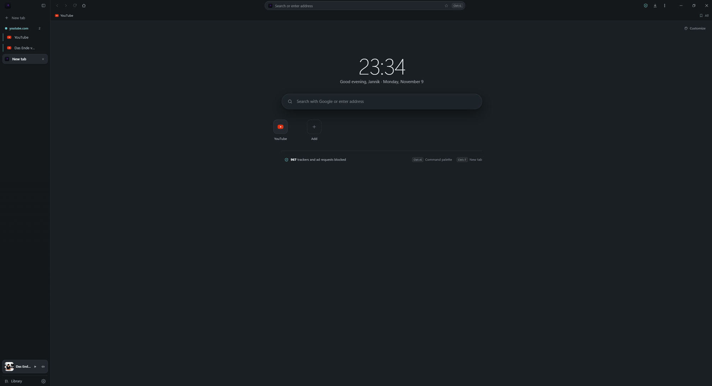

📑
Tabs that stay in order
Vertical, resizable sidebar with pinning, groups, drag & drop, sleep mode and session restore.
JTech Browser is free and open source. It combines a fast Rust shell, Microsoft Edge WebView2 and a React interface into a browser that gives you control over tabs, tracking and appearance.
Version 0.x: new and still changing. Interface in English and German.

Everything that makes JTech Browser – summarized.
Vertical, resizable sidebar with pinning, groups, drag & drop, sleep mode and session restore.
Split View, Peek windows and Picture-in-Picture help you keep multiple contents in view.
adblock-rust checks requests at network level. EasyList, EasyPrivacy and more lists included.
Themes, colours, animated backgrounds, cursor effects and a customizable start page.
No telemetry, local SQLite database, per-site permissions, clear cookies and cache on exit.
Rust backend, Tauri 2 and WebView2 keep memory low and startup fast.
Download the latest version for Windows or explore the source code.